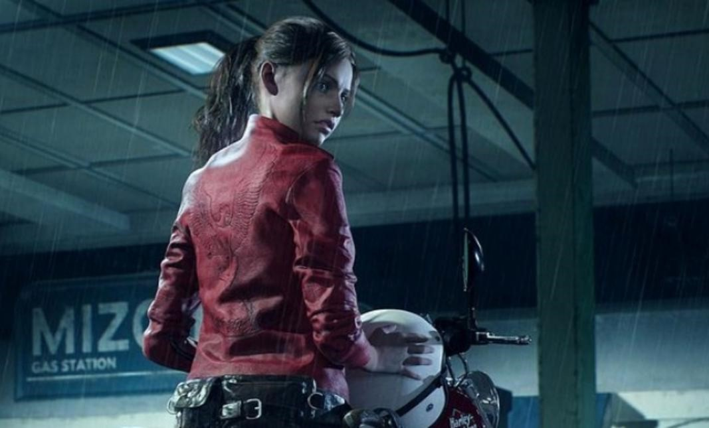
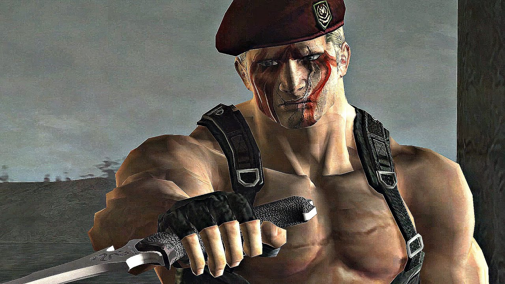
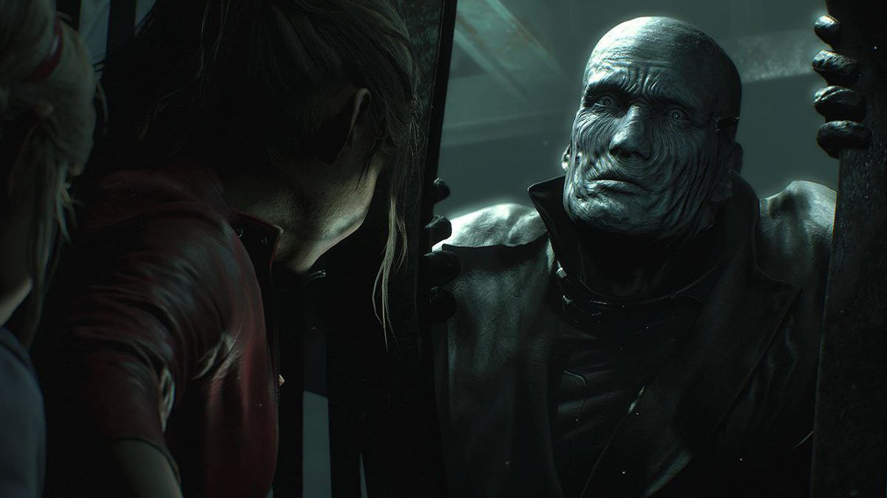
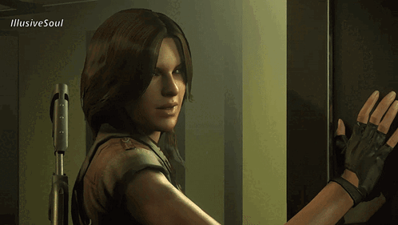
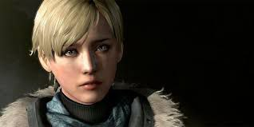

Ада Вонг (англ. Ada Wong) — псевдоним спецагента, специализирующегося на шпионаже. Об этой женщине практически ничего неизвестно. Отличается уникальными физическими данными, сильным характером и острым умом. Нередко она предавала нанимателей, чтобы достигнуть своих «истинных целей», которые до сих пор остаются загадкой. Имеет тягу к красному цвету, что прослеживается на протяжении всей франшизы..
Клэр Редфилд (англ. Claire Redfield) — в настоящее время является сотрудницей правозащитной организации TerraSave. Также младшая сестра Криса Редфилда, основателя и оперативника BSAA, раннее служившего в S.T.A.R.S. С тех пор как Клэр пережила инцидент в Раккун-Сити в 1998 году, она вновь оказалась в эпицентре нескольких вспышек биологической опасности, что побудило ее, как и Криса, посвятить свою карьеру борьбе с биоорганического угрозой.

Джек Краузер (англ. Jack Krauser) — бывший член USSOCOM и второстепенный антагонист Resident Evil 4. Вместе с Леоном Кеннеди участвовал в южноамериканской военной кампании. Инсценировав свою смерть, Краузер начал работать на Альберта Вескера.

Тиран Т-103 (англ. Tyrant T-103) — серия массово производимого биоорганического оружия, ставшего апогеем проекта «Тиран» корпорации «Амбрелла».

Хелена Харпер (англ. Helena Harper) — бывший агент ЦРУ. За год до событий в Толл-Оукс, она становится агентом Секретной Службы, правительственной организации США, которая обеспечивает безопасность президента и его семьи. Напарница Леона Кеннеди и старшая cестра Деборы. Появляется в Resident Evil 6.

Шерри Биркин (англ. Sherry Birkin) — американский федеральный агент Отдела операций по безопасности (DSO), дочь Уильяма и Аннет Биркин, учёных, работавших в корпорации «Амбрелла». Будучи ребёнком, пережила вспышку Т-вируса в Раккун-Сити осенью 1998 года. В ходе инцидента была заражена G-вирусом, но выжила благодаря Клэр Редфилд, которая вовремя ввела ей вакцину. Вследствие этого у неё появилась способность к регенерации.

Эшли Грэм (англ. Ashley Graham) — дочь бывшего президента США. Девушка была похищена культом Лос-Илюминадос для того, чтобы получить контроль над правительством страны.